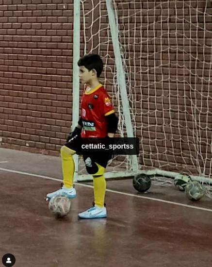
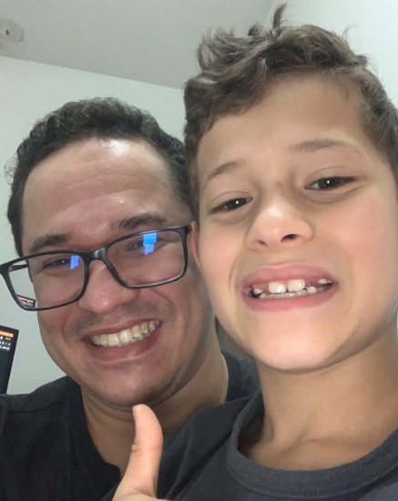
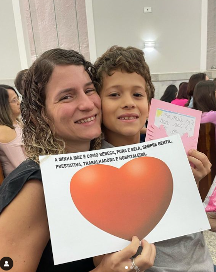
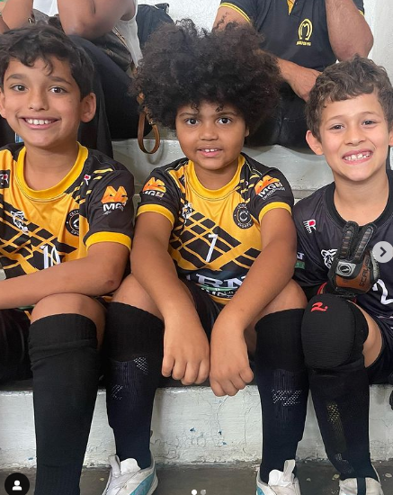

Sobre Mim
Vitor Toneli nasceu em 21 de dezembro de 2015, na bela cidade de Caratinga, MG. Estuda na Escola Jairo Grossi e é um apaixonado goleiro que treina todos os dias. Seu sonho é se tornar um goleiro profissional e, ao mesmo tempo, ajudar seu pai, Rodrigo Toledo, como programador web fullstack.
Imagem de Perfil
Família e Amigos

Rodrigo Toledo

Gislene Dornelas

Amigos